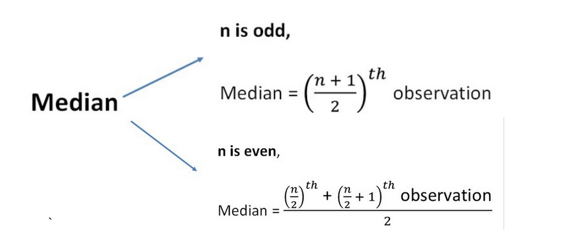

TEACH A TOPIC
Mean, Median & Mode
Mean is the average of the numbers. Its very easy to calculate. You add all the numbers and then divide by the total number. In other words, it is the sum divided by the count.
माध्य संख्याओं का औसत है। इसकी गणना करना बहुत आसान है. आप सभी संख्याओं को जोड़ें और फिर कुल संख्या से भाग दें। दूसरे शब्दों में, यह गिनती से विभाजित योग है।
Mean = Σx / n
here,
The median is the middle number of a set of numbers sorted in ascending or descending order. Furthermore, it provides a more descriptive measure than the average.
माध्यिका एक आरोही या अवरोही क्रमित संख्याओं की बीच की संख्या होती है। इसके साथ ही, यह औसत से अधिक वर्णनात्मक होता है।
Mode is the most frequent number.
बहुलक सबसे अधिक बार आने वाली संख्या है।
Q.1.Find the mean, median and mode of the given data?
2, 5, 7, 5, 9, 5, 8, 11, 4
Solution:
Figures: 2, 5, 7, 5, 9, 5, 8, 11, 4
Mean = (Sum of Observations)/(Total number of Observations)
= (2 + 5 + 7 + 5 + 9 + 5 + 8 + 11 + 4)/ 9
= 56/9
= 6.22
1
To find the median, first arrange it in ascending order.
2, 4, 5, 5, 5, 7, 8, 9, 11
The total number of observations is 9 , which is an odd number.
Therefore,
Median = {(n+1)/2}th term |If the number of all observation|
= ( 9 + 1 ) / 2 | is “n” which is an odd number, |
= ( 9 + 1 ) / 2
= 5th term
= 5
Mode is the most frequently occurring number.
Therefore,
Mode = 5 2
THANK YOU...